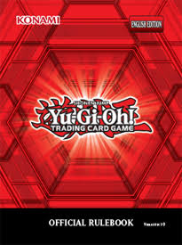
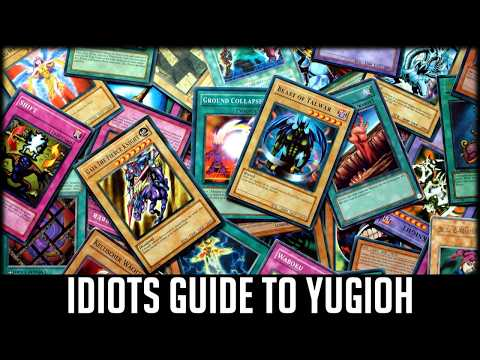

Favorite Cards
Meet the monsters that stand out in my collection.

A personal hobby website about Yu-Gi-Oh!
Welcome to my Yu-Gi-Oh! hobby site. I created this space to share the cards, strategies, and memories that make dueling exciting for me.
Explore my collectionMeet the monsters that stand out in my collection.
Read beginner-friendly notes about deck building, combos, and decision-making.
Make sure to also check the Master Rule.

Going to local event or card shops that sell the product is a good place to start to learn the game. Online resources such as YouTube is also a good starting point to learn how to play.

"Sometimes The End Of One Adventure Is Just The Beginning Of Another."
— Yami Yugi